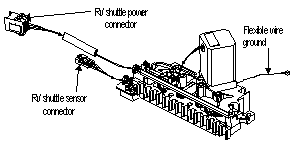

Grounding RV Shuttle Walking Beam
This procedure describes how to ground the RV shuttle walking beam.
Parts Required for RV Shuttle Replacement:
- RV shuttle with grounded walking beam, boxed and tested
- Screw, 8-32 x 5/8 inch shuttle right rear mounting
- Washers (2), internal star lock, flexible wire to walking beam
- Washer, flat, shuttle mounting screw

| Screw Location | Size | Length (inches) |
|---|---|---|
| Right Rear | 8-32 | 5/8 |
| Right Front | 8-32 | 1 |
| Left Rear | 8-32 | ½ |
Grounding the beam eliminates occasional static discharge between the walking beam and rake pusher. Ungrounded instruments can exhibit unexplained RV shuttle errors or system motion errors.
Note: RV shuttles configurations lower than G do not have a grounding wire on the walking beam.
-
Replace an RV shuttle with a grounded walking beam RV shuttle.
- If you have questions or concerns, contact your local technical support office.